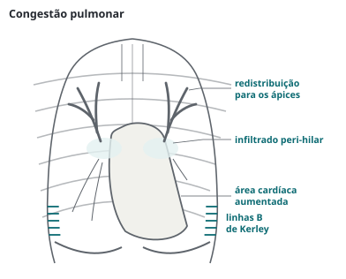

Nefrologia · 75 min · KDOQI 2015 e 2019, ISPD 2022, KDIGO 2009 a 2026 · monografia
Terapia renal substitutiva do ponto de vista de quem atende o paciente fora da sala de diálise: modalidades e o CONVINCE, acesso vascular pelo KDOQI 2019, adequação pelo KDOQI 2015, complicações agudas e crônicas, peritonite pela ISPD 2022, o dialítico no pronto-socorro, ajuste de fármacos, transplante renal (encaminhamento pela KDIGO 2020 e SBN 2025, imunossupressão, rejeição, CMV, BK, pneumocistose, câncer e vacinas) e o cuidado conservador sem diálise.
Não há diretriz única de diálise e transplante; o texto costura documentos de anos diferentes, e a prova cobra os pontos em que eles se renovaram:
| Tema | Referência | O que muda a conduta |
|---|---|---|
| Acesso vascular | KDOQI 2019 | Plano de vida individual no lugar do "fístula primeiro"; sem cateter central de inserção periférica de G3 a G5 |
| Dose de hemodiálise | KDOQI 2015 | Kt/V por sessão com alvo de 1,4 e mínimo de 1,2 |
| Hemodiafiltração | CONVINCE 2023 | Menor mortalidade que a hemodiálise de alto fluxo |
| Peritonite | ISPD 2022 | Até 0,40 episódio por ano; cefepima isolada aceitável |
| Anemia | KDIGO 2026 | Estimulador com hemoglobina de 9 a 10, sem mantê-la em 11,5 ou mais |
| Transplante | KDIGO 2009 e 2020, SBN 2025, CMV 2025, BK 2024 | Encaminhar com filtração abaixo de 20; letermovir como profilaxia; rastreio mensal de BK |
O preparo está detalhado na leitura de doença renal crônica, e o momento da diálise na lesão aguda, na de lesão renal aguda. Na doença crônica, o KDIGO 2024 manda iniciar por avaliação composta (sintomas, sinais, qualidade de vida, preferência, filtração e exames), o que costuma ocorrer, em geral e não sempre, com filtração entre 5 e 10 mL/min/1,73 m². O KDOQI 2015 retirou o ponto de corte de filtração, e no IDEAL começar mais cedo por número não mudou sobrevida.
O que o clínico decide é o preparo: encaminhar com filtração abaixo de 30 ou pelo risco da KFRE, discutir hemodiálise, diálise peritoneal, transplante e cuidado conservador, criar o acesso com antecedência, vacinar para hepatite B e preservar as veias. Começar na urgência, por cateter, significa mais infecção, internação e morte no primeiro ano.
O mecanismo explica o que cada modalidade faz bem. Na difusão, o soluto atravessa a membrana a favor do gradiente de concentração, o que remove bem moléculas pequenas (ureia, potássio) e mal as médias. Na convecção, a pressão empurra água pela membrana e arrasta solutos pequenos e médios (beta-2-microglobulina, citocinas). A ultrafiltração remove água e corrige volume.
| Hemodiálise | Diálise peritoneal | Hemodiafiltração | |
|---|---|---|---|
| Mecanismo | Difusão com ultrafiltração | Difusão e ultrafiltração osmótica pelo peritônio | Difusão mais convecção de grande volume |
| Ritmo e acesso | 3 sessões semanais de 3 a 4 horas; fístula, prótese ou cateter | Diária, domiciliar, manual ou automatizada; cateter peritoneal | Como a hemodiálise; acesso com fluxo alto |
| Vantagens | Depuração rápida, equipe presente | Autonomia, sem punção, preserva a função residual | Menor mortalidade no CONVINCE |
| Limites | Hipotensão, desequilíbrio, intervalo longo | Peritonite, hérnias, perda proteica, absorção de glicose | Água ultrapura e máquina própria |
A escolha é compartilhada; não há diferença de sobrevida demonstrada entre hemodiálise e diálise peritoneal na população geral. A peritoneal preserva melhor a diurese residual, que facilita o manejo de volume e potássio e deve ser protegida de nefrotóxicos também depois que a diálise começa.
O CONVINCE (N Engl J Med 2023) randomizou 1.360 pacientes em hemodiálise de alto fluxo, todos capazes de atingir pelo menos 23 litros de convecção por sessão, para hemodiafiltração de alta dose ou manutenção. Em 30 meses de seguimento mediano, morreram 17,3% contra 21,9% (razão de risco de 0,77; IC 95% de 0,65 a 0,93). Limites: ensaio aberto, europeu, com pacientes selecionados por ter acesso capaz de fluxo alto; o benefício parece depender do volume convectivo alcançado. O britânico H4RT (1.553 participantes) terminou o seguimento em 2025 sem resultado principal publicado até a conferência deste texto.
Na UTI, o paciente instável tolera melhor a terapia contínua, anticoagulada de preferência com citrato regional; no hepatopata, o acúmulo de citrato aparece como acidose progressiva com relação entre cálcio total e iônico acima de 2,5. Dose, acesso e momento estão na leitura de lesão renal aguda.
A ordem geral continua: fístula arteriovenosa nativa, depois prótese, e o cateter por último, porque ele tem mais infecção, trombose, estenose venosa central e mortalidade. O KDOQI 2019 trocou o dogma do "fístula primeiro" pelo plano de vida para a falência renal: qual sequência de modalidades é provável para aquele paciente e qual acesso serve a ela. Para o idoso com vasos ruins e expectativa de vida curta, uma prótese ou um cateter pode ser melhor que três fístulas frustradas.
| KDOQI 2019 | Graduação |
|---|---|
| Plano de vida individual com filtração de 15 a 20 mL/min/1,73 m², doença progressiva ou já em terapia substitutiva | opinião |
| Acesso arteriovenoso em vez de cateter na maioria dos pacientes em hemodiálise; no incidente, fístula preferida à prótese | condicionalbaixa |
| Encaminhar para o acesso com filtração de 15 a 20, antes se a queda passa de 10 mL/min por ano | opinião |
| Proteger veias e artérias, sem cateter central de inserção periférica nem punções desnecessárias, em G3 a G5 e em diálise | opinião |
| Cateter: jugular interna direita preferida à esquerda | opinião |
| Protocolo de cuidado do óstio e das conexões do cateter | fortemoderada |
Na fístula normal há frêmito e sopro contínuos. Frêmito ausente sugere trombose, urgência vascular: quanto mais cedo a desobstrução, maior a chance de salvar o acesso.
| Complicação | Como aparece | Conduta |
|---|---|---|
| Estenose | Sangramento prolongado após a sessão, pressão venosa alta, queda do Kt/V; edema do membro inteiro e colaterais no tórax se central | Ultrassom com Doppler ou fistulografia e angioplastia |
| Isquemia da mão (roubo) | Dor, frio, palidez, pior durante a sessão | Avaliação vascular; prever antes de criar o acesso no diabético e no idoso |
| Aneurisma | Alerta se cresce rápido ou a pele afina ou ulcera | Não puncionar sobre ele; cirurgia se sintomático ou com pele comprometida |
| Sangramento | Após a sessão ou por ruptura | Compressão digital contínua por 15 a 20 minutos, sem torniquete |
| Infecção | Mais comum na prótese | Hemoculturas e cobertura para estafilococo |
O Kt/V de ureia diz quantas vezes a água corporal (V) foi depurada pelo dialisador (K) no tempo da sessão (t); a razão de redução da ureia anda junto. Ambos medem só soluto pequeno, nada dizem de volume, fósforo ou moléculas médias.
| KDOQI 2015 | Classe |
|---|---|
| Três sessões por semana: Kt/V de pool único com alvo de 1,4 e mínimo entregue de 1,2 por sessão | 1B |
| Depuração renal residual abaixo de 2 mL/min: no mínimo 3 horas por sessão | 1D |
| Reduzir o sódio da dieta e remover sódio e água na diálise para controlar volume e pressão | 1B |
Acima do mínimo, mais ureia não compra sobrevida: o HEMO (2002) comparou Kt/V médio de 1,32 com 1,71, e membrana de baixo com alto fluxo, sem diferença de mortalidade. O debate atual é tempo de sessão, controle de volume e, desde o CONVINCE, convecção.
O ganho de peso entre sessões reflete o sal ingerido, e ganho grande obriga a ultrafiltração rápida, associada a hipotensão e isquemia. O intervalo longo do fim de semana concentra o risco: em 32.065 pacientes americanos (Foley, 2011), o dia seguinte a ele teve mais mortes (22,1 contra 18,0 por 100 pacientes-ano) e mais internações cardiovasculares.
A hipotensão intradialítica ocorre em cerca de 10 a 12% das sessões. O KDOQI de 2005 a definiu como queda sistólica de 20 mmHg ou mais, ou da média de 10 mmHg ou mais, com sintomas. A ultrafiltração retira volume do intravascular mais rápido do que o interstício repõe, somada a vasodilatação, disfunção autonômica e cardiopatia; episódios repetidos levam a isquemia de órgãos e perda da função residual.
| Complicação | Quadro | Conduta e prevenção |
|---|---|---|
| Hipotensão | Tontura, náusea, bocejos, cãibras | Trendelenburg, parar a ultrafiltração, salina, coloide se persistir. Prevenir: peso seco, menos sal, dialisato a 35 a 36 °C (primeira linha na diretriz europeia), rever anti-hipertensivo antes da sessão, midodrina nos refratários |
| Cãibras | Membros inferiores, com ultrafiltração agressiva | Reduzir a ultrafiltração, salina; rever o peso seco |
| Síndrome do desequilíbrio | Cefaleia, náusea, confusão, convulsão nas primeiras sessões, com ureia muito alta, acidose ou lesão cerebral | Primeira sessão de 2 a 2,5 horas, fluxo de sangue de 200 a 250 mL/min, redução de ureia de cerca de 40%; sódio do dialisato mais alto, manitol; contínua na lesão cerebral |
| Reação tipo A | Em 5 a 20 minutos: urticária, broncoespasmo, hipotensão. Óxido de etileno; membrana AN69 com inibidor da ECA | Parar, não devolver o sangue, tratar como anafilaxia; trocar membrana e esterilização |
| Reação tipo B | Mais tardia e branda: dor torácica e lombar | Suporte; excluir isquemia e hemólise |
| Embolia gasosa | Dor torácica, dispneia, síncope, déficit neurológico | Clampear a linha venosa, parar a bomba, oxigênio a 100%. O decúbito lateral esquerdo com cabeça baixa é o ensino clássico; revisões recentes preferem o dorsal e reservam o lateral esquerdo para aspirar o ar por cateter central |
| Hemólise | Dor torácica e lombar, sangue cor de vinho no circuito | Parar, sem devolver o sangue do circuito (risco de hipercalemia); dosar potássio; investigar dialisato (cloramina, cobre, hipo-osmolaridade, calor) e a bomba |
Anemia (KDIGO 2026; detalhes na leitura de doença renal crônica). Na hemodiálise, repõe-se ferro venoso com ferritina até 500 ng/mL e saturação até 30%, suspendendo com ferritina acima de 700 ou saturação de 40% ou mais; no PIVOTAL, o ferro venoso proativo reduziu morte e eventos cardiovasculares. O estimulador da eritropoese começa com hemoglobina de 9 a 10 g/dL e não deve mantê-la em 11,5 ou mais, porque alvos de 13 a 15 aumentaram AVC, trombose do acesso e eventos cardiovasculares. No candidato a transplante, transfundir o mínimo, pela aloimunização.
Distúrbio mineral e ósseo (KDIGO 2017). Na diálise, paratormônio entre cerca de 2 e 9 vezes o limite superior (2C), fósforo baixado em direção ao normal (2C), sem hipercalcemia (2C) e com restrição do quelante à base de cálcio (2B); calcimimético, calcitriol ou análogo, e paratireoidectomia no grave refratário.
Doença cardiovascular é a principal causa de morte: calcificação vascular, hipertrofia ventricular, arritmia e morte súbita. A hipertensão do dialítico é, na maioria, volume, e o primeiro passo é o peso seco. Estatina não se inicia em quem já dialisa (4D e AURORA negativos), mas se mantém em quem a usava (KDIGO 2013).
O tratamento se apoia em registros: trocar a varfarina, suspender cálcio e vitamina D ativa, controlar o paratormônio, intensificar a diálise, cuidar das feridas e da dor. O tiossulfato de sódio fora de bula é dado em geral a 25 g intravenosos após cada sessão, mas nenhum ensaio randomizado publicou resultado, e uma metanálise de 19 coortes (422 pacientes) não mostrou benefício em lesão nem sobrevida; o SNF472 falhou no desfecho primário de fase 3. No EVOLVE, o cinacalcete reduziu os casos de calcifilaxia (6 contra 18).
A peritonite é a complicação que define o método, com perda de membrana, transferência para hemodiálise, internação e morte. Vem de contaminação na troca (estafilococo coagulase-negativo, S. aureus), do óstio ou túnel, ou do intestino (Gram-negativos, flora mista). O tempo conta: cada hora de atraso no antibiótico aumentou em 5,5% o risco de falha da técnica ou morte num estudo australiano.
| ISPD 2022 | Classe |
|---|---|
| Diagnóstico com 2 de 3: dor abdominal e/ou efluente turvo; leucócitos no efluente > 100/µL com > 50% de polimorfonucleares após permanência de pelo menos 2 horas; cultura positiva | 1C |
| Efluente turvo é tratado como peritonite até confirmação ou exclusão | 1C |
| Antibiótico empírico o quanto antes, após colher celularidade, Gram e cultura (em frasco de hemocultura) | 1B |
| Gram-positivos com cefalosporina de primeira geração ou vancomicina; Gram-negativos com cefalosporina de terceira geração ou aminoglicosídeo | 1B |
| Cefepima isolada como alternativa empírica | 2B |
| Via intraperitoneal preferida, salvo sepse sistêmica | 1B |
| Retirar o cateter na refratária (efluente sem clarear após 5 dias de antibiótico adequado) | 1D |
| Observar além do quinto dia se a celularidade está caindo | 2C |
| Fúngica: retirar o cateter imediatamente | 1C |
| Profilaxia antifúngica sempre que houver curso de antibiótico | 1B |
| Taxa do programa de até 0,40 episódio por paciente-ano; culturas negativas abaixo de 15% | 1C |
flowchart TD A["Efluente turvo
ou dor abdominal"] --> B["Celularidade, Gram
cultura em frasco
de hemocultura"] B --> C["Antibiótico já
Gram+ e Gram-
via intraperitoneal"] C --> D["Antifúngico
profilático junto"] D --> E{"Cultura?"} E -->|"fungo"| F["Retirar cateter
já"] E -->|"bactéria"| G["Ajustar ao
antibiograma"] G --> H{"Clareou em
5 dias?"} H -->|"sim"| I["2 ou 3 semanas
conforme o germe"] H -->|"não, células caindo"| J["Observar mais"] H -->|"não, sem queda"| K["Refratária:
retirar cateter"]
No pronto-socorro sem equipe de diálise peritoneal, começar por via sistêmica e passar à intraperitoneal assim que possível. Flora mista com anaeróbio sugere peritonite entérica (perfuração, isquemia): tomografia e cirurgião. Outras complicações: infecção do óstio e do túnel, hérnias e vazamentos, hidrotórax (quase sempre à direita), perda proteica, hipocalemia, ganho de peso pela glicose e a rara esclerose peritoneal encapsulante. A ISPD 2020 trocou a "adequação" numérica por prescrição dirigida a objetivos combinados com o paciente, sem o Kt/V como medida única.
Três quadros dominam as idas à emergência, e todos se resolvem melhor perguntando logo quando foi a última sessão, qual o peso seco e qual o acesso.
É causa importante de arritmia e morte súbita nessa população, sobretudo após o intervalo longo ou sessão perdida. Eletrocardiograma urgente a partir de 6,0 mmol/L; 6,5 ou mais é grave. A sequência é a da UK Kidney Association 2023, mas o destino é a máquina: no anúrico, nada tira potássio tão rápido quanto a diálise.
Quase sempre é sessão perdida, excesso de sal e água ou perda da diurese residual, mas edema pulmonar num dialítico que estava bem também pode ser isquemia miocárdica ou arritmia. Diurético não funciona no anúrico e só atrasa. Oxigênio, ventilação não invasiva, nitrato em dose alta se a pressão permite e ultrafiltração urgente.

Febre ou calafrio com cateter de hemodiálise, sobretudo na sessão, é infecção de corrente sanguínea relacionada ao cateter até prova em contrário. Hemoculturas pareadas, do cateter e periférica; sem veia periférica, a IDSA aceita colher das linhas conectadas ao cateter durante a sessão.
| IDSA 2009, cateter de hemodiálise | Grau |
|---|---|
| Empírico com vancomicina mais cobertura de Gram-negativo pelo antibiograma local | AII |
| Retirar sempre o cateter na infecção por S. aureus, Pseudomonas ou Candida, com cateter temporário em outro sítio | AII |
| Outros germes: começar sem retirar; se os sintomas somem em 2 a 3 dias sem infecção metastática, trocar por fio-guia ou manter com selo de antibiótico por 10 a 14 dias | BII |
| S. aureus sensível: trocar por cefazolina 20 mg/kg após a sessão | AII |
| 4 a 6 semanas se a bacteremia persiste mais de 72 horas após a retirada, ou há endocardite ou tromboflebite supurativa | BII |
flowchart TD A["Febre ou calafrio
com cateter de HD"] --> B["Hemoculturas pareadas
examinar óstio e túnel"] B --> C["Vancomicina após
a sessão + Gram-"] C --> D{"Germe?"} D -->|"S. aureus
Pseudomonas
Candida"| E["Retirar cateter
temporário em
outro sítio"] D -->|"outros"| F{"Melhor em
2 a 3 dias?"} F -->|"sim"| G["Trocar por fio-guia
ou selo de antibiótico"] F -->|"não"| E E --> H{"Bacteremia
> 72 h ou
endocardite?"} H -->|"sim"| I["4 a 6 semanas
ecocardiograma"] H -->|"não"| J["Curso curto
pelo germe"]
Três perguntas decidem a prescrição: quanto resta de função renal, se o fármaco ou seu metabólito ativo sai pelo rim, e se sai na diálise. Saem moléculas pequenas, pouco ligadas a proteína e com volume de distribuição pequeno (aminoglicosídeos, betalactâmicos, lítio, metformina); não saem as muito ligadas a proteína ou lipossolúveis (varfarina, amiodarona). O dialisável se dá após a sessão, com dose por sessão.
| Fármaco | Problema | Alternativa |
|---|---|---|
| Morfina, codeína, tramadol, meperidina | Metabólitos ativos: sedação, depressão respiratória, convulsão | Fentanil ou hidromorfona em dose baixa |
| Gabapentina, pregabalina, baclofeno | Acúmulo: sonolência, mioclonia, encefalopatia | Dose muito reduzida; baclofeno, evitar |
| Enoxaparina | Acúmulo do anti-Xa, sangramento | Heparina não fracionada |
| Cefepima, aciclovir | Neurotoxicidade | Dose de diálise; suspeitar diante de confusão |
| Metformina, glibenclamida | Acidose láctica; hipoglicemia prolongada | Insulina em dose baixa |
| Antiácido com magnésio ou alumínio, enema de fosfato, gadolínio do grupo I | Hipermagnesemia, hiperfosfatemia, fibrose sistêmica nefrogênica | Evitar; gadolínio dos grupos II e III |
Lítio (EXTRIP). Tratamento extracorpóreo recomendado se a função renal está comprometida e a litemia passa de 4,0 mEq/L, ou se há rebaixamento de consciência, convulsão ou arritmia grave, qualquer que seja a litemia (1D); sugerido acima de 5,0 mEq/L, com confusão importante ou se a queda abaixo de 1,0 levaria mais de 36 horas (2D). Hemodiálise intermitente é a preferida (1D). Metanol, etilenoglicol, salicilato e metformina estão na leitura de intoxicações.
Para o elegível, o transplante é o melhor tratamento da falência renal, com mais sobrevida e qualidade de vida e menor custo, inclusive no idoso, no diabético e no obeso. O melhor de todos é o preemptivo com doador vivo; no Brasil, só 3,3% dos transplantes são preemptivos.
Idade isolada não exclui. Não se encaminha quem tem câncer sem tratamento, doença neurológica degenerativa progressiva, vasculopatia grave das ilíacas, doença psiquiátrica descontrolada ou uso de drogas ilícitas (SBN 2025). Adiam a avaliação coronariopatia não tratada, AVC ou infarto recentes, infecção ativa (a hepatite C não impede) e câncer ativo, salvo pele não melanoma e tumores localizados de próstata ou de rim menores que 1 cm (KDIGO 2020).
A avaliação cobre risco cardiovascular, rastreio de câncer como na população geral, sorologias (HIV, hepatites B e C, sífilis, CMV, Epstein-Barr, varicela) e tuberculose latente, vacinas, via urinária, doença de base (algumas recorrem no enxerto, como a glomeruloesclerose segmentar e focal), adesão e a parte imunológica: ABO, HLA, anticorpos anti-HLA e prova cruzada.
| KDIGO 2009, receptor de transplante | Classe |
|---|---|
| Indução com agente biológico; antagonista do receptor de interleucina-2 em primeira linha (1B), depletor de linfócitos no alto risco imunológico (2B) | 1A |
| Manutenção com inibidor de calcineurina e antiproliferativo, com ou sem corticoide | 1B |
| Tacrolimo como inibidor de calcineurina de primeira linha | 2A |
| Micofenolato como antiproliferativo de primeira linha | 2B |
| Classe | Toxicidade que o clínico vê |
|---|---|
| Inibidores de calcineurina (tacrolimo, ciclosporina) | Nefrotoxicidade aguda e crônica, hipertensão, tremor, diabetes pós-transplante, hipercalemia, hipomagnesemia, microangiopatia trombótica |
| Antiproliferativos (micofenolato, azatioprina) | Citopenias, diarreia; micofenolato é teratogênico |
| Inibidores de mTOR (sirolimo, everolimo) | Dislipidemia, proteinúria, aftas, má cicatrização, pneumonite |
| Corticoide | Diabetes, osteoporose, infecção |
A creatinina do transplantado tem linha de base própria, e subida sustentada de cerca de 20 a 25% sobre ela (regra prática, sem corte formal na diretriz) se investiga, não se observa. O KDIGO 2009 manda dosá-la (1B) diariamente na primeira semana e depois com frequência decrescente, até a cada 2 a 3 meses após o primeiro ano.
| Fase | Causas a lembrar |
|---|---|
| Primeiros dias | Função tardia do enxerto (necrose tubular), trombose vascular, fístula urinária, obstrução, rejeição acelerada |
| Semanas a meses | Rejeição aguda celular ou mediada por anticorpo, nível alto de inibidor de calcineurina, nefropatia por BK, pielonefrite do enxerto, estenose da artéria do enxerto |
| Anos | Rejeição crônica mediada por anticorpo, muitas vezes por má adesão; recorrência da doença de base; nefrotoxicidade crônica |
A investigação combina Doppler do enxerto, nível do imunossupressor, sedimento, carga de BK no plasma, anticorpos doador-específicos (DSA) e a biópsia, lida pelos critérios de Banff, que é o exame que decide.
| KDIGO 2009, rejeição aguda | Classe |
|---|---|
| Biopsiar antes de tratar, salvo se atrasar muito o tratamento | 1C |
| Rejeição celular: corticoide como tratamento inicial | 1D |
| Celular resistente ao corticoide ou recorrente: depletor de linfócitos | 2C |
| Mediada por anticorpo: plasmaférese, imunoglobulina venosa, anti-CD20 ou depletor de linfócitos, com ou sem corticoide | 2C |
flowchart TD A["Creatinina sobe
cerca de 20 a 25%
sobre a basal"] --> B["Volume, AINE,
IECA, infecção urinária"] B --> C["Nível de tacrolimo
Doppler do enxerto
BK no plasma, DSA"] C --> D{"Causa
evidente?"} D -->|"nível alto"| E["Ajustar dose
procurar interação"] D -->|"obstrução ou
estenose"| F["Urologia ou
angioplastia"] D -->|"não"| G["Biópsia do enxerto
critérios de Banff"] G --> H["Rejeição celular:
pulso de
corticoide"] G --> I["Por anticorpo:
plasmaférese
e IgIV"] G --> J["Nefropatia BK:
reduzir
imunossupressão"]
As infecções seguem um calendário ditado pela imunossupressão e pelas profilaxias.
| Prevenção | Graduação |
|---|---|
| CMV, doador positivo e receptor negativo: profilaxia por 6 meses (valganciclovir, ganciclovir ou letermovir) ou terapia preemptiva; receptor positivo: profilaxia por 3 meses ou preemptiva (consenso de 2025) | fortealta |
| Rejeição tratada com depletor de linfócitos: reiniciar a prevenção de CMV por 4 a 12 semanas | fracamoderada |
| Pneumocistose: sulfametoxazol-trimetoprima diário por 3 a 6 meses (KDIGO 2009); de novo por 6 semanas ou mais após tratar rejeição (2C) | 1B |
| BK: reduzir a imunossupressão com carga acima de 10.000 cópias/mL ou nefropatia em biópsia (consenso de 2024); entre 1.000 e 10.000 em duas medidas, sugerido (fraca, B) | forteB |
| BK: não usar cidofovir, leflunomida nem quinolona | contraA e B |
A doença por CMV se trata com valganciclovir 900 mg de 12 em 12 horas ou ganciclovir 5 mg/kg de 12 em 12 horas, ajustados à função renal pela bula, até a viremia negativar, no mínimo 2 semanas. O BK se rastreia no plasma mensalmente até o nono mês e a cada 3 meses até o fim do segundo ano; o tratamento é reduzir a imunossupressão em etapas: cortar ao menos metade do antimetabólito, depois suspendê-lo, só então baixar o tacrolimo. A rifampicina da tuberculose derruba o tacrolimo (nível frequente, 1C, ou rifabutina).
Câncer. O risco de câncer de pele e lábio é muito alto: fotoproteção por toda a vida (1D), exame anual da pele por profissional habilitado (2D) e acitretina após câncer de pele (2B). A doença linfoproliferativa ligada ao Epstein-Barr predomina no receptor soronegativo de doador positivo. Diante de câncer, considerar reduzir a imunossupressão (2C); no Kaposi, inibidor de mTOR (2C).
O KDIGO 2024 pede informar sobre o tratamento conservador abrangente junto com as opções de diálise e apoiá-lo em quem não a quer. Não é "não tratar": mantém nefroproteção, diurético, controle de potássio, acidose e anemia, e trata os sintomas que mais pesam (prurido, fadiga, náusea, dispneia, dor, depressão), com planejamento antecipado e cuidados paliativos. Cabe ao idoso frágil, com muitas comorbidades ou demência, em quem estudos observacionais mostram que a diálise acrescenta pouco tempo de vida e muito tempo de hospital. Também cabem a diálise por tempo limitado, com reavaliação combinada, e a suspensão da diálise, decisão legítima que exige controle ativo de sintomas.